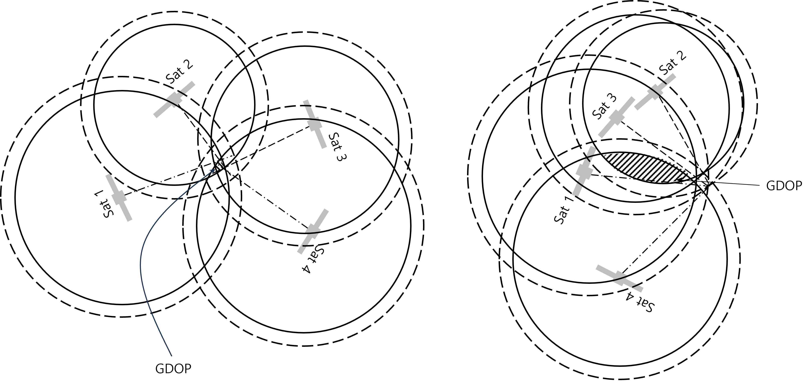
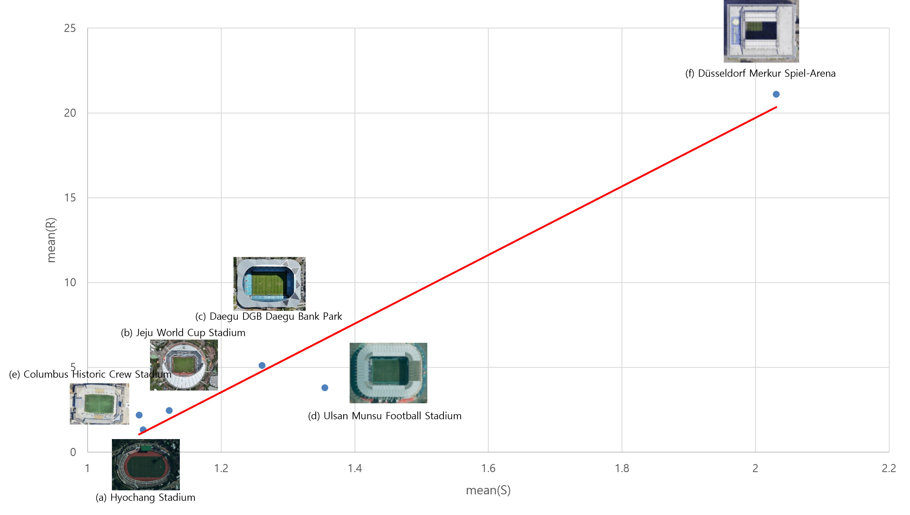
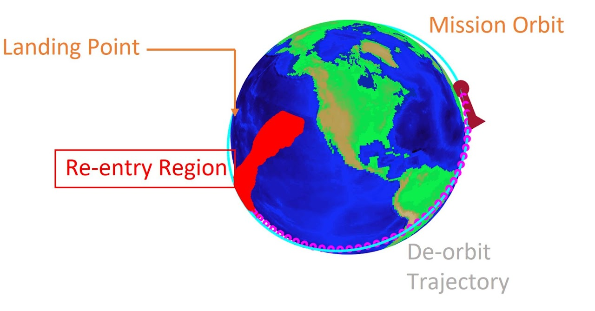
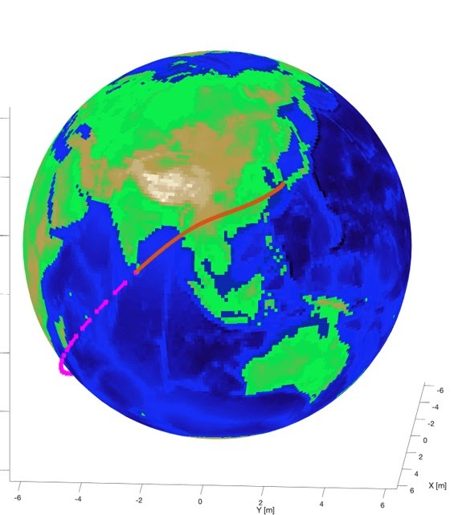
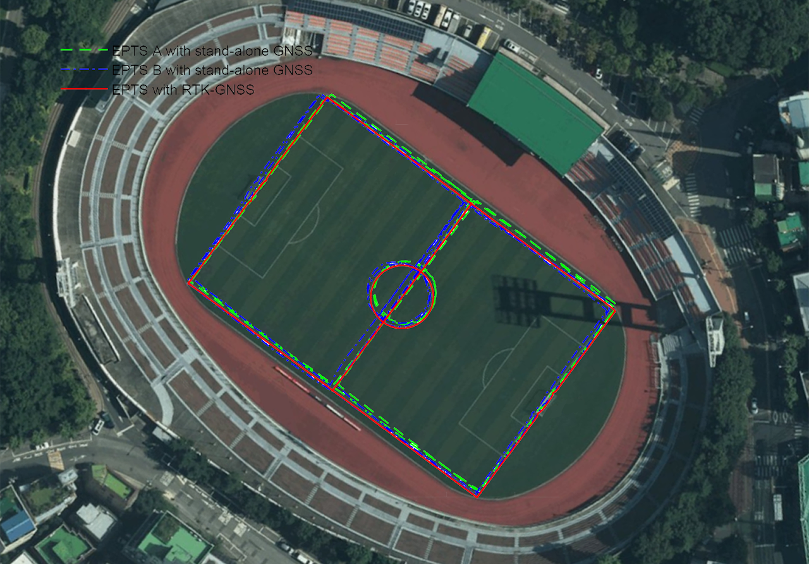
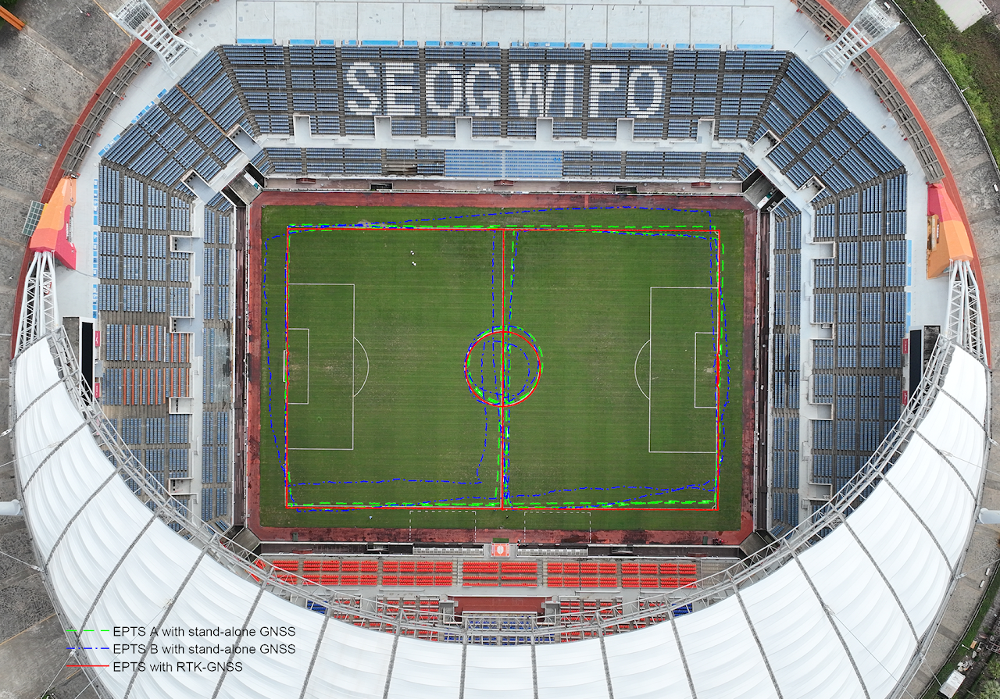

Research
My research interests include, but not are limited to :
Missile & UAV Guidance
- Nonlinear guidance laws considering various constraints (Impact Time & Impact Angle)
- Three-dimensional guidance laws
- Standoff tracking guidance laws of multiple UAVs
- Cooperative guidance laws
Nonlinear Control Systems
- Attitude control of spacecraft
- Affine/nonaffine control of nonlinear underactuated/overactuated systems
State Estimation & Filtering
- Kalman filtering
- Sensor fusion techniques
Ongoing Projects
A Study on GNSS Signal Quality Evaluation Method and Acceleration Measurement Validation (Fitogether)
- A quantitative method to evaluate GNSS signal quality under stadium environments
- Study on acceleration measurement validation


Space-K BIG Project - Space Transportation Mission Center (KASA)
- Study on GNC of reusable space launch vehicles
- Aerodynamic analysis and guidance/control system integration of reusable space launch vehicles
Completed Projects
The Study on ReUSV Multi-Purpose Trajectory Design and GNC (ReUSV Research Center, KRIT)
- Trajectory design of ReUSV (Reusable Unmanned Space Vehicles)
- Study on GNC of ReUSV


The Performance Test and Comparison Test of OHCOACH Cell-X and Cell-Y (Fitogether)
- Performance analysis of wearable EPTS
- Study on the validation of acceleration measurement methodology



The Filter Design of GPS/IMU Integration for OHCOACH Cells (Fitogether)
- Design of integration filters using GPS/INS data
- Design of real-time GPS/INS integration filters of EPTS for football players
Management System Analysis and Planning Research for the Drone Automatic Operation (FRI, 국립소방연구원)
- Analysis on elementary technologies of autonomous drone takeoff and landing at mission area
- Analysis on elementary technologies of autonomous mission operations
- Design of a mission based cyclic autonomous operation system
Study on Attitude Control for Cubesats using Micro Electric Thrusters (NRF)
- Design of attitude controllers for cubesats
- Study on electric thruster requirements for cubesats
 AASL
AASL